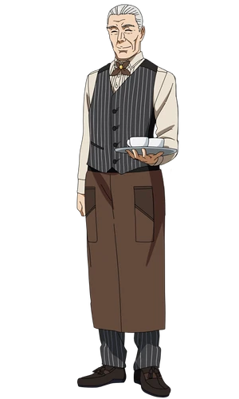
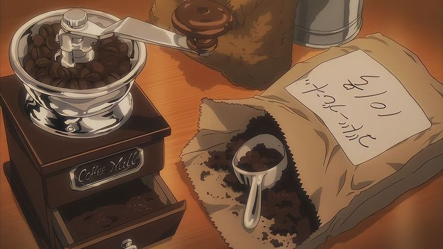
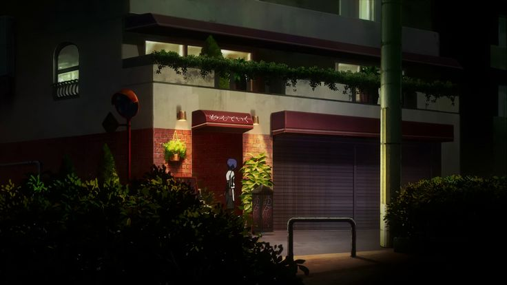
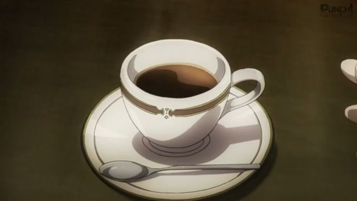
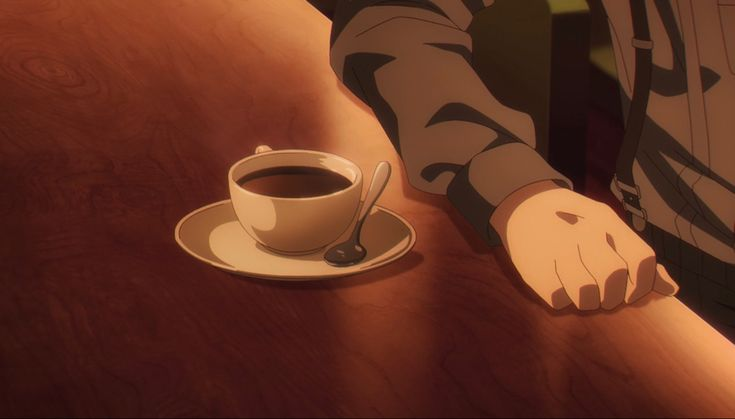
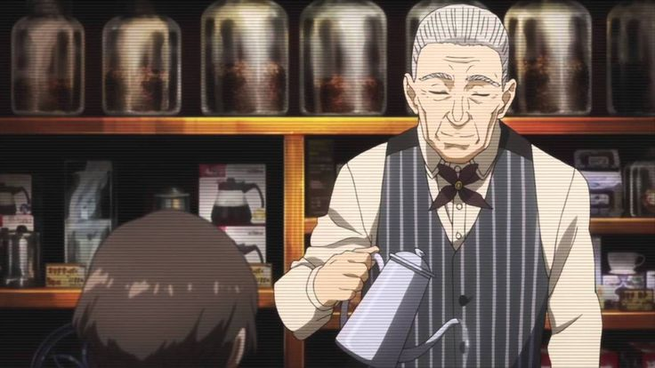

Hello, I'm Deniz, I'm the owner of this coffee shop. How about having a coffee?

About Me
Software developer with a passion for creating elegant solutions. I specialize in backend development and game design. When I'm not coding, you'll find me exploring new coffee shops or diving into manga and anime.
Just like in Anteiku, I believe in creating a cozy space where ideas can flourish. Let's connect over a cup of coffee and discuss your next project!

Skills
Java
Backend
Kotlin
Mobile App
PHP
Web
Unity
C#
Git
Version
SQL
Data Ground
My Projects
Gallery




Quotes
“We’re just like books. We wait for someone to find us, open us, and discover what’s inside.”
- Uta“It is far better to grasp the universe as it really is than to persist in delusion, however satisfying and reassuring.”
- YoshimuraAnteiku Guestbook
Leave a message in our guestbook - just like in Anteiku!
Contact Me
Feel free to reach out if you'd like to collaborate or just want to say hello!